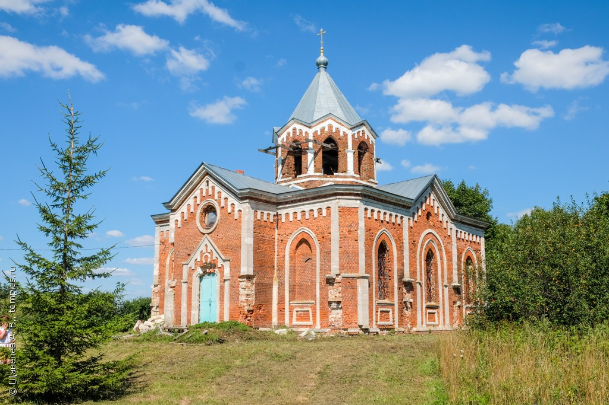

С. Злыхино
Село Злыхино (Покровское, Екатерининское) находится при р. Ямна, на юго-востоке от Зарайска. В окладных книгах 1676 г. Покровское названо Новым и значится вотчиной Романа Матова. В 1788 г. село перешло к Ляпуновым, затем Аладьиным и кн. Татьяне Халжери. Построенная Романом Матовым в 1791 г. деревянная церковь сгорела. В 1857 г. поглощена пожаром новая церковь, тоже деревянная.
История. Село Злыхино (Покровское, Екатерининское) находится при р. Ямна, на юго-востоке от Зарайска. В окладных книгах 1676 г. Покровское названо Новым и значится вотчиной Романа Матова. В 1788 г. село перешло к Ляпуновым, затем Аладьиным и кн. Татьяне Халжери. Построенная Романом Матовым в 1791 г. деревянная церковь сгорела. В 1857 г. поглощена пожаром новая церковь, тоже деревянная.
Существующая каменная церковь строилась при усадьбе по заказу Д. И. Сессаревского в 1858-1860 гг. Небольшое кирпичное здание с нарядным убранством из белого камня принадлежит к романтическому направлению в архитектуре своего времени. В память о прежней Екатерининской церкви в храме устроен Екатерининский придел. Композиция храма «иже под звоном» сочетается с ложноготическими архитектурными формами позднейшей интерпретации.
Центрический храм со слабыми выступами алтаря и притвора увенчан восьмериком колокольни с каркасным шатровым верхом. В отделке здания широко использованы щипцы, аркатурные пояса и стрельчатые очертания проемов.